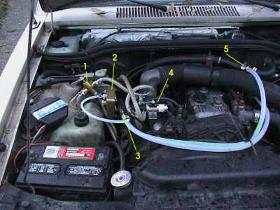
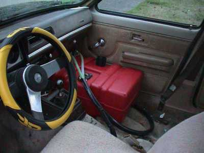
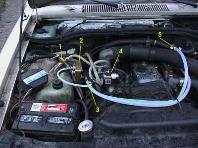
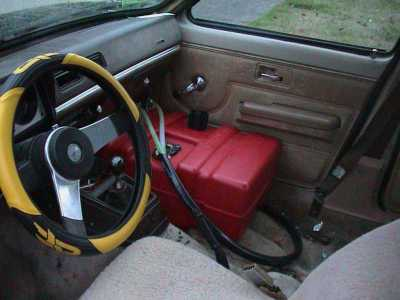

|
The Greasel Mark 2 kit is awesome, it just dropped into the 'vette like a greased monkey. I was one of the first customers to obtain the new Generation 2 kit, which includes the amazing Triple Bypass Hose. Previous systems used a hose-in-hose (HiH) technique to keep the oil warm on the way from the tank to the injector, but the Triple hose just snuggles the heat conducting teflon fuel line in close to the heat conducting teflon coolant lines, surrounded by a rubber jacket. This way there's no complicated fittings at the ends of the lines.
|
This photo should give a good idea of what I did. Here's what the numbered parts are:
- Brass valve - To select between looping the injector return line back to the injector input, or back to the tank. This thing just barely clears the hood when it's on the "return to tank" setting, in the picture it's in the safer "return to input" setting.
- Racor filter - it's only being held in by one bolt now, with a lock washer. I took the bolt out which holds the diesel filter onto this mounting plate, and replaced it with a longer bolt so the Racor could live on that bolt too. I had to enlarge the mounting hole in the Racor for this, but luckily it's made of Butter Metal. ( I think. I can't find that on the periodic table now.)
- Triple bypass hose - I punched a hole in the firewall big enough for the 3way hose. I actually made a huge hole, and put a plastic grommet in, which I dremelled down to the perfect size for the hose + solenoid wire.
- Solenoid switch - As Perry mentioned on his SVO 'vette guide, this thing was just made to live right here on the intake manifold. The threaded holes are perfectly spaced for the switch mounting plate, and even the existing bolts are already long enough to accommodate the switch. Sweet.
- Tap into heater core coolant loop - I discussed series vs. parallel taps with some WVO GrandMasters, they indicated that either way is fine. Since the kit came with these T-junctions which fit, I went parallel, and it's working fine.
|

[click to enlarge]
|
|
See the FAQ for the reason there isn't a front seat. But since there wasn't a
seat anyway, what a great place for the pilot to get intimate with his lovely WVO stash! You can barely
see the selector switch on the lower console below the shifter. The Triple Bypass Hose loops around underneath the tank, then penetrates the firewall to the engine compartment. The 29-G figure 8s I routinely pull on the oval track require the use of the racing steering wheel. When I switch to donuts on the Mobius course, I'll upgrade to the Tie-Fighter controller; safety is no accident.
|

[click to enlarge]
|
|
[ h o m e ]
[ g a l l e r y ]
[ m a d s c i e n t i s t ]
|
![ [click to enlarge]](images/jls_vette-DSC00111.JPG){kind=link}
![ [click to enlarge]](images/jls_vette-DSC00102.JPG){kind=link}